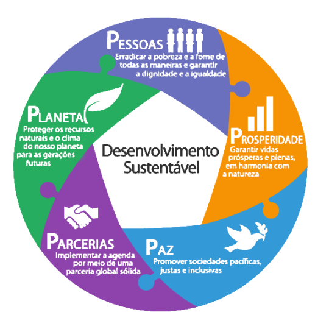

🌱COMO POSSO SER SUSTENTÁVEL?🌱
dicas 🌿
- Instalação de postos de coleta seletiva
- Economize água em casa
- Economize energia elétrica
- Incentive a economia local
- Prefira o design sustentável
- Aproveite todas as partes dos alimentos
- Tenha uma alimentação mais saudável
- Evite comprar por impulso
- Reduza o resíduo eletrônico
- Separe o lixo corretamente
- Reutilize embalagens
- Promova a educação ambiental
- Opte pelo lazer sustentável
Não é preciso realizar grandes mudanças para adquirir atitudes mais sustentáveis. O consumo consciente pode ser praticado diariamente por meio de pequenos gestos, como o descarte correto de produtos e o incentivo à reciclagem. Quando constantes, essas ações se tornam um hábito e passam a ser feitas naturalmente.

Por fim, a sustentabilidade é um conceito fundamental para garantir um futuro saudável para o nosso planeta. Ela envolve ações que visam equilibrar o desenvolvimento econômico, a proteção do meio ambiente e a promoção da justiça social.